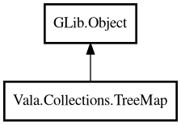

TreeMap
Object Hierarchy:

Description:
public class TreeMap<K,V> : Object
A sorted map backed by a balanced binary search tree.
Keys are ordered according to a comparison function provided at construction time. Provides O(log n) lookup, insertion, and deletion.
Inspired by Java's TreeMap.
Example:
var map = new TreeMap<string,string> ((a, b) => {
return strcmp (a, b);
});
map.put ("banana", "yellow");
map.put ("apple", "red");
map.put ("cherry", "red");
assert (map.firstKey () == "apple");
assert (map.lastKey () == "cherry");
Content:
Creation methods:
Methods:
- public V @get (K key)
Returns the value associated with the specified key. Returns null if
the key is not found.
- public K ceilingKey (K key)
Returns the smallest key greater than or equal to the given key.
Returns null if no such key exists.
- public void clear ()
Removes all entries from the map.
- public bool containsKey (K key)
Returns whether the map contains the specified key.
- public K firstKey ()
Returns the smallest key in the map. Returns null if the map is empty.
- public K floorKey (K key)
Returns the greatest key less than or equal to the given key. Returns
null if no such key exists.
- public void forEach (owned BiConsumerFunc<K,V> func)
Applies the given function to each entry in key order.
- public bool isEmpty ()
Returns whether the map is empty.
- public ArrayList<K> keys ()
Returns all keys in sorted order as an ArrayList.
- public K lastKey ()
Returns the largest key in the map. Returns null if the map is empty.
- public void put (owned K key, owned V value)
Associates the specified value with the specified key. If the key
already exists, the value is replaced.
- public bool remove (K key)
Removes the entry with the specified key. Returns true if the key was
found and removed.
- public int size ()
Returns the number of entries in the map.
- public TreeMap<K,V> subMap (K from, K to)
Returns a new TreeMap containing entries whose keys are in the range [
from, to) (from inclusive, to exclusive).
Inherited Members:
All known members inherited from class GLib.Object
- @get
- @new
- @ref
- @set
- add_toggle_ref
- add_weak_pointer
- bind_property
- connect
- constructed
- disconnect
- dispose
- dup_data
- dup_qdata
- force_floating
- freeze_notify
- get_class
- get_data
- get_property
- get_qdata
- get_type
- getv
- interface_find_property
- interface_install_property
- interface_list_properties
- is_floating
- new_valist
- new_with_properties
- newv
- notify
- notify_property
- ref_count
- ref_sink
- remove_toggle_ref
- remove_weak_pointer
- replace_data
- replace_qdata
- set_data
- set_data_full
- set_property
- set_qdata
- set_qdata_full
- set_valist
- setv
- steal_data
- steal_qdata
- thaw_notify
- unref
- watch_closure
- weak_ref
- weak_unref